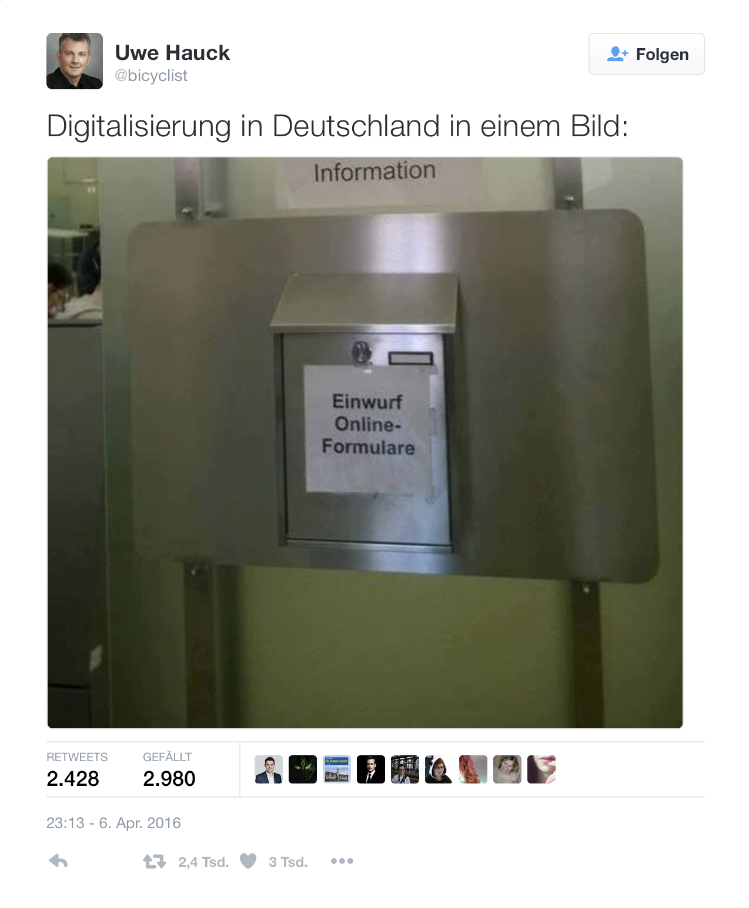

OneGov Cloud - Online-Gemeindeschalter as a Service

GA-Tageskarten & Turnhallen
Was ist E-Government in einer kleineren bis mittleren Schweizer Gemeinde? Versuchen wir für einmal keine theoretische, sondern eine praktische Definition anhand der Online-Transaktionen einer mittleren Schweizer Gemeinde:
- Reservationen: 56%
- GA-Tageskarten: 59%
- Räume: 41%
- Formulare: 33%
- Betreibungsregisterauszüge: 61%
- Wohnsitzbestätigungen: 11%
- Übrige: 38%
- Veranstaltungen: 11%
Die Zahlen mögen etwas überraschen. In der theoretischen Diskussion von E-Government geht es um „offizielle“ Formular wie Umzugsmeldungen oder Betreibungsregisterauszüge. In der Praxis der Gemeindeverwaltung geht es offenbar zu einem Grossteil um andere Dienstleistungen.
Aussensicht & Innensicht
Wie jeder Schalter hat auch der Online-Schalter einer Gemeinde zwei Seiten. Als Kunde am Schalter zeigt sich mir die die Aussensicht der Organisation. Für mich als Kunde (Einwohner) sind dieServicequalität sowie Verfügbarkeit des Services (Schalteröffnungszeiten) absolut zentral: ein Online-Schalter ist 24h geöffnet.
Die Innensicht vertritt der Verwaltungsangestellte auf der anderen Seite des Gemeindeschalters. Die Verwaltung ist - wie der Kunde - an einer hohen Servicequalität interessiert. Geschäftsvorgänge müssen transparent und nachvollziehbar sein.
Sowohl in der Aussen- als auch in der Innensicht stehen die Kosten nicht im Zentrum. Eine Gemeindeverwaltung hat kaum Anreize für Effizienz-Verbesserungen. Der politische Wille zu Effizienzsteigerungen in der Gemeindeverwaltung dürfte relativ gering sein, zumal deren Realisierung einen Abbau personeller Ressourcen nach sich zöge.
Transaktionen & Service Ticketing
Als Kunde erfahre ich Servicequalität, insofern mein Anliegen effizient und für mich transparent erledigt wird. Dabei ist es mir gleichgültig, wie meine Transaktion hinter dem Online-Schalter weiterverarbeitet wird. Eine mögliche Prozess-Integration ist das Problem der Gemeindeverwaltung, nicht des Kunden. Selbst wenn meine Transaktion im Hintergrund manuelle Vorgänge auslöst (Concierge Service) stört mich dies nicht, sofern ich über den Status meiner Transaktion jederzeit transparent informiert werde (Service Ticketing).
Service Center & Gemeinde-Bot
Die vielzitierte Digitalisierung kann ihr Potential erst unter der Voraussetzung entfalten, dass die bestehenden Offline-Prozesse vereinfacht und nicht telquel in die Online-Welt übertragen werden. Geschieht diese Vereinfachung, so besteht die Möglichkeit, die Verarbeitung der Transaktionen in ein gemeinde-übergreifendes Shared-Service-Zentrum auszulagern. Konsequent weitergedacht könnte der Service in nicht all zu ferner Zukunft gar durch einen Gemeinde-Roboter (Bot) übernommen werden. Was nach Science Fiction tönen mag, ist soweit nicht entfernt: Betrugserkennungs-Systeme für Kreditkarten funktionieren genau an dieser Mensch-Maschinen Schnittstelle. Der Weg zum Gemeinde-Bot ist weniger weit, als man vielleicht denkt.

Standards & Gemeinde APIs
In einer idealen IT-Welt gibt es für alles einen allgemein gültigen Standard. In der realen Welt gibt es öffentliche Webservice-Schnittstellen (public REST APIs). Einer Gemeindeverwaltung kann es nämlich egal sein, ob eine Transaktion über das Online-Formular auf eigenemPortal, über eine Smartphone App eines Drittanbieters oder direkt über dieSchnittstelle aus der Software eines Unternehmens ausgelöst wird.
Eine (noch) fehlende semantische Standardisierung darf kein Grund sein, auf Webservice-Schnittstellen als eine zwingende Anforderung für E-Government-Portale zu verzichten.
Bottom-up & Top-down
Eine Gemeinde ist eine Gemeinde ist eine Gemeinde. Alle Gemeinden der Schweiz sind bezüglich Leistungsangebot und den damit verbundenen Abläufen sehr ähnlich. Diese Homogenität der Gemeinden spricht scheinbar für einen Top-down-Ansatz im E-Government. Der Bund macht immer mehr einheitliche Vorgaben und die Kantone setzen diese um. Ein solcher Vollzugs-Föderalismus verträgt sich jedoch nicht mit der Föderalismus-Tradition der Schweiz. Die “unteren” Staatsebenen sind mehr als reine Vollzugsvasallen. Bottom-up statt Top-down steckt in der DNA des Schweizer Föderalismus.
Ebenfalls gegen einen Top-down Ansatz der Vereinheitlichung spricht der Umstand, dass die Gemeinden eben durchaus ihre Besonderheiten haben. Dies wird erst sichtbar, wenn man in jene E-Government-Prozesse schaut, die nicht im Lehrbuch stehen (Reservation von Turnhallen oder Skilagerplätzen). Laufen diese Prozesse nicht ebenso über die E-Government-Plattform, sind operative Exzellenz und hohe Zugänglichkeit zum Service-Angebot nicht zu erreichen.
SaaS & Open Source
Eine kleine bzw. mittlere SchweizerGemeinde entscheidet selbst über ihre IT-Systemlandschaft. Das bedeutet aber keinesfalls, dass die Gemeinde ihre E-Government-Lösung selbst entwickelt und betreibt. Als idealer Weg für eine Gemeinde bietet sich die Service-Miete einer Portallösung in einem Software-as-a-Service (SaaS) Modell an. Unter den privaten Anbietern von Portalen gibt es marktwirtschaftliche Konkurrenz. Dies führt zu einem Wettkampf der Anbieter bezüglich Service-Angebot und Qualität sowie im Angebotspreis.
Auch wenn diese Argumente klar für privatwirtschaftliche Lösungen sprechen, muss sichergestellt werden, dass auf diese Weise nicht eingezäunte Daten-„Gärlti“ entstehen. Der Datenaustausch unter den Service-Portalen unterschiedlicher Anbieter ist via Webservice APIs sichergestellt.
Begibt sich die Gemeinde, die sich nun zwar unabhängig für eine Lösung entscheidet, nicht in neue Abhängigkeiten eines privaten Softwareanbieters (Lock-in)? Die Frage ist berechtigt. Genau aus diesem und anderen guten Gründen soll E-Government Software Open Source sein.
seantis gmbh entwickelt in der Gemeinschaft des Vereins OneGov.ch die Open Source Gemeindelösung OneGov Cloud. Die OneGov Cloud wurde 2016 mit einem Best of SwissWeb Award in der Kategorie Public Affairs ausgezeichnet.
OneGov Cloud - Der Online-Schalter für Gemeinden: www.onegovcloud.ch